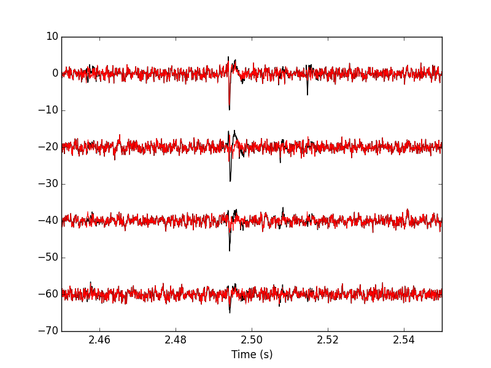
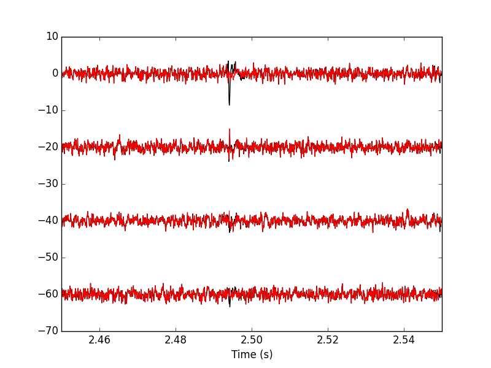

Sorting a Big Data Set With Python
Table of Contents
1 Model / Catalog Estimation
1.1 Spike "peeling": a "Brute force" superposition resolution
We are going to resolve (the most "obvious") superpositions by a "recursive peeling method":
- Events are detected and cut from the raw data or from an already peeled version of the data.
- The closest center (in term of Euclidean distance) to the event is found.
- If the residual sum of squares (
RSS), that is: (actual data - best center)\(^2\), is smaller than the squared norm of a cut, the best center is subtracted from the data on which detection was performed—jitter is again compensated for at this stage. - Go back to step 1 or stop.
To apply this procedure, we need, for each cluster, estimates of its center and of its first two derivatives. Function mk_center_dictionary does the job for us. We must moreover build our clusters' centers such that they can be used for subtraction, this implies that we should make them long enough, on both side of the peak, to see them go back to baseline. Formal parameters before and after bellow should therefore be set to larger values than the ones used for clustering:
centers = { "Cluster " + str(i) :
swp.mk_center_dictionary(sp0[np.array(c8)==i],
np.array(data))
for i in range(8)}
1.1.1 First peeling
Function classify_and_align_evt is used next. For each detected event, it matches the closest template, correcting for the jitter, if the closest template is close enough:
swp.classify_and_align_evt(sp0[0],np.array(data),centers)
['Cluster 4', 41, -0.76918445702167082]
We can use the function on every detected event. A trick here is to store the matrix version of the data in order to avoid the conversion of the list of vectors (making the data of the different channels) into a matrix for each detected event:
data0 = np.array(data)
round0 = [swp.classify_and_align_evt(sp0[i],data0,centers)
for i in range(len(sp0))]
We can check how many events got unclassified on a total of 2325:
len([x[1] for x in round0 if x[0] == '?'])
56
Using function predict_data, we create an ideal data trace given events' positions, events' origins and a clusters' catalog:
pred0 = swp.predict_data(round0,centers,data0.shape[0],data0.shape[1])
data1 = data0 - pred0
We can compare the original data with the result of the "first peeling" to get Fig. \ref{fig:FirstPeeling}:
plt.plot(tt, data0[0,], color='black')
plt.plot(tt, data1[0,], color='red',lw=0.7)
plt.plot(tt, data0[1,]-20, color='black')
plt.plot(tt, data1[1,]-20, color='red',lw=0.7)
plt.plot(tt, data0[2,]-40, color='black')
plt.plot(tt, data1[2,]-40, color='red',lw=0.7)
plt.plot(tt, data0[3,]-60, color='black')
plt.plot(tt, data1[3,]-60, color='red',lw=0.7)
plt.xlabel('Time (s)')
plt.xlim([2.45,2.55])

Figure 1: 100 ms of data. Black, original data; red, after first peeling.
1.1.2 Second peeling
We then take data1 as our former data0 and we repeat the procedure. We do it with slight modifications: detection is done on a single recording site and a shorter filter length is used before detecting the events. Doing detection on a single site (here site 0) allows us to correct some drawbacks of our crude spike detection method. When we used it the first time we summed the filtered and rectified versions of the data before looking at peaks. This summation can lead to badly defined spike times when two neurons that are large on different recording sites, say site 0 and site 1 fire at nearly the same time. The summed event can then have a peak in between the two true peaks and our jitter correction cannot resolve that. We are therefore going to perform detection on the different sites. The jitter estimation and the subtraction are always going to be done on the 4 recording sites:
data_filtered = np.apply_along_axis(lambda x:
fftconvolve(x,np.array([1,1,1])/3.,
'same'),
1,data1)
data_filtered = (data_filtered.transpose() /
np.apply_along_axis(swp.mad,1,
data_filtered)).transpose()
data_filtered[data_filtered > -3] = 0
sp1 = swp.peak(-data_filtered[0,:])
We classify the events and obtain the new prediction and the new "data":
round1 = [swp.classify_and_align_evt(sp1[i],data1,centers)
for i in range(len(sp1))]
pred1 = swp.predict_data(round1,centers,data1.shape[0],data1.shape[1])
data2 = data1 - pred1
We can check how many events got unclassified on a total of 583:
len([x[1] for x in round1 if x[0] == '?'])
126
We can compare the first peeling with the second one (Fig. \ref{fig:SecondPeeling}):
plt.plot(tt, data1[0,], color='black')
plt.plot(tt, data2[0,], color='red',lw=0.7)
plt.plot(tt, data1[1,]-20, color='black')
plt.plot(tt, data2[1,]-20, color='red',lw=0.7)
plt.plot(tt, data1[2,]-40, color='black')
plt.plot(tt, data2[2,]-40, color='red',lw=0.7)
plt.plot(tt, data1[3,]-60, color='black')
plt.plot(tt, data2[3,]-60, color='red',lw=0.7)
plt.xlabel('Time (s)')
plt.xlim([2.45,2.55])

Figure 2: 100 ms of data. Black, first peeling; red, second peeling.